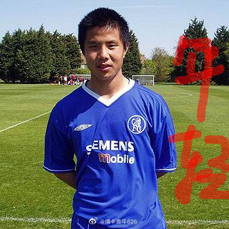

Transfermarkt显示生涯身价的峰值93万美元，远不及年薪……
@博卡青年626:
【#中超# 聊聊#蒿俊闵# 职业生涯】
国足队长蒿俊闵职业生涯数据、年薪、身价一览
年薪：800万
身价：40万欧
座驾：玛莎拉蒂GT，售价300万左右
集体荣誉：欧冠4强、德甲亚军、德国杯冠军
2013赛季中超亚军、2014赛季中国足协杯冠军
个人荣誉：第3位踢过欧冠的中国球员（代表沙尔克04）
2005赛季、2007赛季中超最佳新秀
参加过的大赛：2005年世青赛、2008年奥运会男足比赛、2011年、2015年、2019年亚洲杯
效力过的球队：天津泰达、沙尔克04、#山东鲁能#
蒿俊闵1987年出生在武汉一个不算富裕的农民家庭，6岁加入武汉市万松园路小学足球队，15岁加入天津泰达梯队，17岁赴切尔西队试训，18岁成为天津泰达绝对主力，并当选中超最佳新秀，18岁成为国脚，23岁留洋，赴德甲劲旅沙尔克04效力，和前皇马巨星劳尔成为队友，32岁成为国足队长。
蒿俊闵是国足、鲁能的进攻组织核心，他出道多年，一直都没有负面新闻，是中国足坛人品最好的球员之一。
国足队长蒿俊闵职业生涯数据、年薪、身价一览
年薪：800万
身价：40万欧
座驾：玛莎拉蒂GT，售价300万左右
集体荣誉：欧冠4强、德甲亚军、德国杯冠军
2013赛季中超亚军、2014赛季中国足协杯冠军
个人荣誉：第3位踢过欧冠的中国球员（代表沙尔克04）
2005赛季、2007赛季中超最佳新秀
参加过的大赛：2005年世青赛、2008年奥运会男足比赛、2011年、2015年、2019年亚洲杯
效力过的球队：天津泰达、沙尔克04、#山东鲁能#
蒿俊闵1987年出生在武汉一个不算富裕的农民家庭，6岁加入武汉市万松园路小学足球队，15岁加入天津泰达梯队，17岁赴切尔西队试训，18岁成为天津泰达绝对主力，并当选中超最佳新秀，18岁成为国脚，23岁留洋，赴德甲劲旅沙尔克04效力，和前皇马巨星劳尔成为队友，32岁成为国足队长。
蒿俊闵是国足、鲁能的进攻组织核心，他出道多年，一直都没有负面新闻，是中国足坛人品最好的球员之一。
- 